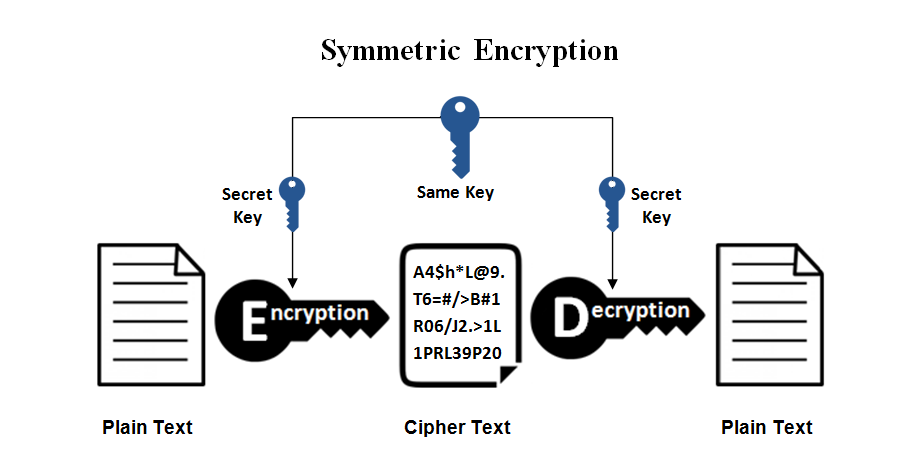
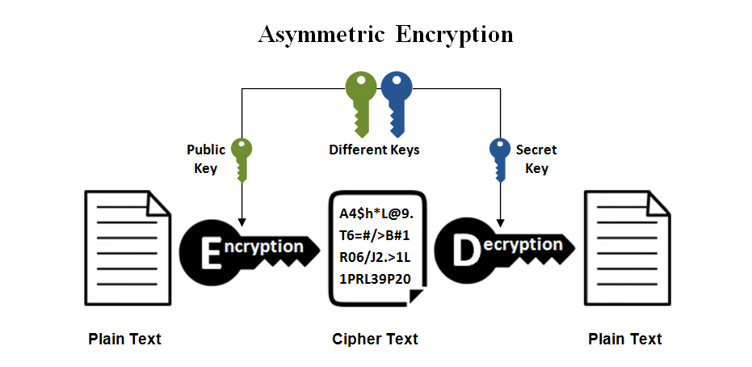

This lesson introduces the foundational concepts of cybersecurity, focusing on security principles, cryptography, and identity management. Students will explore the CIA triad, encryption types, authentication vs. authorization, and the role of certification authorities (CAs) in securing digital communications. Understanding these fundamentals is critical for advancing in cybersecurity roles and certifications.
Security fundamentals form the backbone of cybersecurity practices. Key components include:
These concepts are normally grouped together, known as the CIA triad. The CIA Triad is a foundational model in cybersecurity that represents the three core principles used to guide information security policies and practices.
Cryptography is the practice of encoding messages to protect data from unauthorized access. Encryption converts readable plaintext into unintelligible ciphertext, which can only be reversed by authorized parties. Algorithms, or ciphers, are the methods used to perform encryption and decryption.

Symmetric encryption uses the same key for both encryption and decryption. Algorithms like AES (Advanced Encryption Standard) are fast and efficient for encrypting large amounts of data, but key distribution can be challenging, as the key must remain secret between communicating parties.

Asymmetric encryption uses a pair of keys that are mathematically linked. Data encrypted with the public key can only be decrypted with the matching private key (used for confidentiality), and data signed with the private key can be checked by anyone with the public key (used for digital signatures). Algorithms like RSA (Rivest–Shamir–Adleman) rely on mathematical problems such as integer factorization. Asymmetric encryption is much slower, so in practice (for example in TLS) it is used to agree on or exchange a symmetric session key, and the fast symmetric key then encrypts the actual data.
Modern cryptography relies on tested, public algorithms. They are the foundation for TLS, VPNs, digital signatures and secure email.
| Purpose | Algorithms to know | Notes |
|---|---|---|
| Symmetric encryption | AES (128 or 256-bit), ChaCha20 | Fast; used for bulk data. DES and 3DES are retired. |
| Asymmetric encryption and signatures | RSA, ECC (for example ECDSA) | ECC gives the same strength as RSA with much shorter keys. |
| Key exchange | Diffie-Hellman (DH, ECDHE) | Two parties agree on a shared secret over an open network. |
| Hashing | SHA-256, SHA-3 | MD5 and SHA-1 are broken for security use. |
A hash is a fixed-length fingerprint of data. The same input always gives the same hash, and changing a single bit gives a completely different one, so hashes prove integrity. Hashing is one-way: you can't turn a hash back into the data. Passwords are stored as salted hashes (a random value added before hashing) so identical passwords don't produce identical hashes.
A digital signature is a hash of the message encrypted with the sender's private key. The receiver decrypts it with the sender's public key and compares it with their own hash of the message. A match proves the message wasn't changed (integrity), who sent it (authentication) and that the sender can't deny it (non-repudiation).
Video: Professor Messer, "Hashing and Digital Signatures – CompTIA Security+ SY0-701 – 1.4" (free Security+ course; SY0-701 is the current exam).
Two offices need to encrypt large amounts of data quickly, but first they must share a key safely over the internet. What do they use?
This is how TLS and VPNs work: asymmetric methods solve key exchange, and fast symmetric encryption protects the data.
Alice signs a contract file. Which key does she use to create the signature, and which key does Bob use to check it?
Only Alice holds her private key, so only she can sign. Anyone can check the signature with her public key.
note.txt containing the word hello.Get-FileHash .\note.txt -Algorithm SHA256. Mac or Linux: run shasum -a 256 note.txt.Cybersecurity Curriculum | Level 4: Cybersecurity Essentials